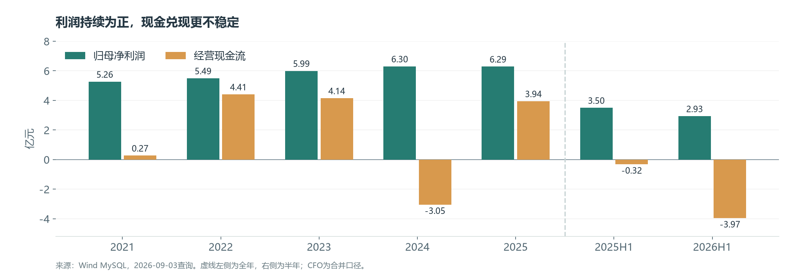
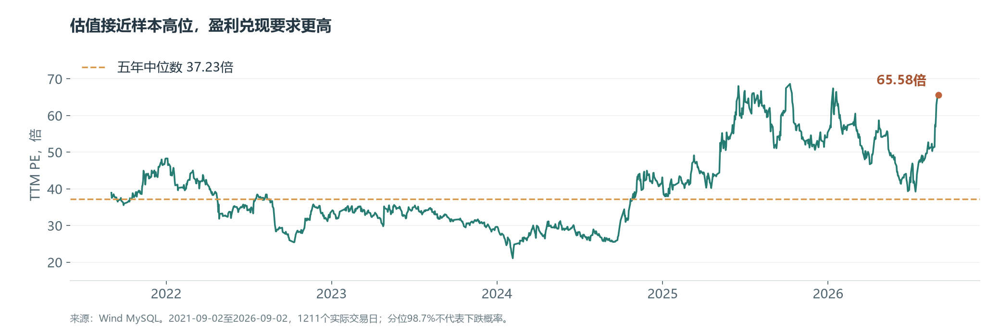

雷达优势需要穿过回款与估值两道关
研究日期：2026年9月3日。行情截至2026年9月2日收盘；财务截至2026年6月30日。以 Wind MySQL 单表只读查询为数据主线，结合公司2025年报、2026年中报核验。金额除特别标注外均为人民币亿元。
1. 结论先行
国睿科技的雷达业务具备值得跟踪的技术和客户基础，但在30.20元、65.58倍TTM市盈率的位置，现有证据不足以支持“有明显安全边际”的判断。当前最需要验证的是利润如何变成现金，以及增长能否消化估值。
公司层面，雷达已经是决定盈利的主业：2026H1该分部贡献约91.1%的收入、94.3%的毛利。工业软件和低空应用提供增量可能，但尚不足以证明公司进入多业务同时放量的阶段。公司中报，第112页；占比为本文计算
财务层面，上半年收入同比仅增长0.33%，毛利率升至43.82%，归母净利润却下降16.20%；经营现金流为−3.97亿元。问题落在信用减值、汇兑、税费及营运资本占用，不能只用“产品卖得好”解释股东回报。
估值层面，9月2日市值375.04亿元，TTM归母净利润5.72亿元；近五年实际交易日样本中，PE处于98.7%分位、PB处于89.2%分位。高分位不能预测短期下跌，但意味着历史经营表现已经不足以解释当前溢价，需要新的增长证据。
短期判断：偏谨慎，业绩与估值存在张力。中期判断：保留雷达业务的成长观察，等待回款、减值和利润增长共同改善。 这一投资判断属于有条件的推断，置信度中等；并非短期股价预测。
2. 公司如何赚钱：主轴是雷达，关键约束是交付后的结算
公司产品包括防务及民用雷达、工业软件与智能制造、智慧轨交。军品、军贸产品主要在军检或验收后确认收入，部分业务通过十四所或外贸代理完成交付和结算。因此，收入确认、最终客户付款和上市公司收款并不必然同步。公司中报，第66页
| 业务 | 2025年主营收入 | 2025年毛利率 | 2026H1分部收入 | 2026H1分部毛利率 | 对投资判断的含义 |
|---|---|---|---|---|---|
| 雷达装备及相关系统 | 27.99 | 38.78% | 15.72 | 45.40% | 决定整体利润弹性与回款风险 |
| 工业软件及智能制造 | 3.05 | 38.52% | 0.86 | 33.08% | 国产替代是方向，规模和盈利仍需证明 |
| 智慧轨交 | 2.12 | 20.90% | 0.69 | 21.02% | 项目验收、城市投资和回款决定兑现节奏 |
口径提示：2025年数据来自主营业务分产品表，三项合计33.17亿元，不含其他业务；2026H1来自全部营业收入分部表，合计17.27亿元。两列有范围差异，不能直接用上述半年度与年度数字计算同比增速。2025年雷达收入同比增长4.72%，工业软件和轨交分别下降23.55%、24.94%。2025年报，第12—13页；2026年中报，第112页
国睿防务2026H1收入14.49亿元、净利润3.18亿元，超过上市公司当期归母净利润2.93亿元；国睿信维同期亏损约149万元。子公司净利润与合并归母净利润存在抵销、总部费用和少数股东口径差异，不能把该比值视为精确利润贡献率，但足以说明盈利高度依赖防务雷达。公司中报，第14页
竞争优势的判断： 既有产品、验收要求、系统集成经验和客户协同提高了新进入者替代难度。但这些优势并不自动带来快回款或无限定价权。研究所与集团渠道带来项目入口，也使上市公司面对客户和结算链条集中。
3. 历史财务：毛利率上升，收入与资本回报没有同步加速

| 指标 | 2021 | 2022 | 2023 | 2024 | 2025 | 2025H1 | 2026H1 |
|---|---|---|---|---|---|---|---|
| 营业收入 | 34.32 | 32.25 | 32.82 | 34.00 | 33.58 | 17.21 | 17.27 |
| 归母净利润 | 5.26 | 5.49 | 5.99 | 6.30 | 6.29 | 3.50 | 2.93 |
| 扣非归母净利润 | 4.65 | 5.22 | 5.78 | 6.16 | 6.10 | 3.41 | 2.89 |
| 毛利率 | 26.97% | 30.24% | 34.71% | 36.07% | 37.80% | 41.28% | 43.82% |
| 加权平均ROE | 11.70% | 11.22% | 11.27% | 10.92% | 9.94% | 5.68% | 4.33% |
| 经营现金流净额 | 0.27 | 4.41 | 4.14 | −3.05 | 3.94 | −0.32 | −3.97 |
| 购建长期资产现金支出 | 0.25 | 0.42 | 0.37 | 0.30 | 0.38 | 0.04 | 0.15 |
来源：MySQL利润表、现金流量表、财务指标表。三表采用合并累计口径；H1是半年累计，不是第二季度单季。ROE使用数据库WAA_ROE，2023—2025及2026H1与公司披露核对；半年ROE未年化。
这组数据支持三个判断：
- 2021—2025收入总体横盘，利润改善主要依靠业务结构和毛利率。 收入从34.32亿元至33.58亿元，归母利润从5.26亿元至6.29亿元。不能把毛利率提升直接等同于需求高速增长。
- 新增账面资本的回报开始承压。 2023—2025年归母净资产从55.51亿元升至66.46亿元，而2025年利润基本持平，ROE下行。2025年权益增长还包含子公司引入少数股东等因素，不能全部解释为利润留存。
- 现金转换偏弱并非仅发生于一个半年。 2023—2025累计经营现金流约5.04亿元，对同期合并净利润的覆盖率仅26.8%；对归母净利润的辅助覆盖率为27.1%。现金流是集团口径，因此优先比较合并净利润。
数据库年度ROIC从2023年的10.86%降至2025年的9.50%。该数采用Wind口径，未独立重构全部投入资本和税后经营利润；仅作为方向性旁证，不用于宣称精确的增量ROIC。整体资产投入的关键在应收和库存，固定资产并不是主要资金去向。
4. 2026中报拆解：为什么增毛利却减利润？
2026H1毛利为7.56亿元，较上年同期增加约0.46亿元；但归母净利润减少约0.57亿元。下表按MySQL合并利润表重建变动桥：
| 影响因素 | 对归母利润同比变动的方向与金额，万元 |
|---|---|
| 毛利增加 | +4,613 |
| 销售、管理、研发费用合计减少 | +748 |
| 信用减值损失增加 | −5,569 |
| 财务费用增加 | −2,969 |
| 所得税费用增加 | −1,700 |
| 税金及附加、其他收益、资产减值、少数股东等净影响 | −784 |
| 归母净利润合计减少 | −5,662 |
这里展示的是会计利润逐项变动桥，不对每项另外套统一税率；所得税已经单列，避免重复扣税。尾项由完整利润变动减去所列项目计算，四舍五入后可能存在1万元尾差。
信用减值是第一观察点。 上半年信用减值损失1.75亿元，上年同期1.19亿元。期末应收账款净额55.03亿元，较年初增加22.17%，明显快于收入。账龄超过一年的应收余额占比从年初52.0%升至59.0%。这比单看应收增长更能提示资金回收周期延长。中报，第75—76、115页
财务费用主要来自汇率，不是利息负担大幅上升。 中报披露汇兑损失5,176万元，上年同期2,139万元；同期利息费用约252万元。美元计价军贸应收在回款前持续暴露于汇率变化，人民币升值会压低利润。汇率可能反转，但缺乏依据把未来汇兑收益写入基准预测。中报，第10、114页
税费也放大了归母利润降幅。 利润总额同比下降9.81%，所得税费用却从5,900万元升至7,600万元，计算有效税率由14.46%升至20.65%。附注中的“研发费用加计扣除及其他”是合并披露项目，未明确拆开，不能据此断言研发税收优惠取消。中报，第116页
单季拆分显示，2026Q2收入约12.19亿元，同比下降10.20%；归母净利润2.16亿元，同比下降21.33%。第一季度收入增长并未持续到第二季度。项目交付仍可能存在波动，但目前数据尚未确认业绩上行拐点。
5. 现金去了哪里：应收、库存与预收款共同约束增长
| 资产或负债项目 | 2025年末 | 2026H1末 | 变化 |
|---|---|---|---|
| 应收账款净额 | 45.04 | 55.03 | +9.98 |
| 应收票据净额 | 4.40 | 0.42 | −3.98 |
| 合同资产 | 7.48 | 6.70 | −0.78 |
| 存货 | 18.17 | 20.54 | +2.37 |
| 预付款项 | 0.44 | 0.99 | +0.55 |
| 应付账款及票据 | 26.93 | 28.56 | +1.63 |
| 合同负债 | 4.06 | 2.82 | −1.24 |
来源：MySQL合并资产负债表。各行变化使用未四舍五入值计算；余额变化包含重分类、减值和汇率等，不能全部当成现金流。
不能只看到应收账款增加9.98亿元，就认定等额资金未收回。 同期票据与合同资产下降，存在结算形式转换。更完整的证据来自现金流补充表：上半年经营性应收增加占用约7.51亿元，库存增加占用2.37亿元，经营性应付增加提供1.20亿元，三项净占用约8.68亿元。它们与利润、减值加回及其他调整共同解释−3.97亿元经营现金流。
从直接法看，销售回款同比减少1.61亿元，采购付款增加1.98亿元，两项合计拖累现金约3.59亿元，接近当期CFO同比减少3.64亿元。同期存货增加、客户预付款减少，说明营运资金压力具有多个来源。中报，第10、119页
应收账款、票据、合同资产和存货净额合计约82.68亿元，占总资产75.4%。这是一个固定资产支出不高、但资金大量沉淀在结算链条中的公司。将其简单视为“轻资产高毛利模式”会遗漏资金时间成本。
集中度与账龄需要一起看。 中报列示前五名应收账款及合同资产余额占比83.07%，其中十四所和中电科技国际贸易两家合计70.22%。强背景客户有助于理解业务来源，但不足以替代期后回款证据。特定客户组合应收余额22.60亿元，按公司政策单独测试未减值时不计提；这不代表资金没有占用成本，也不能反过来直接认定计提不足。中报，第56、76、79页
最强的替代解释是军贸结算长周期和项目验收季节性；最需要的区分性证据是下半年到账金额、账龄迁移、应收减值变化。没有这些证据，适当结论是“值得关注的现金转换异常”，而不是认定坏账最终无法收回。
6. 偿债、资本开支与股东现金
2026H1货币资金13.51亿元，其中可随时用于支付的现金及现金等价物13.43亿元；数据库有息债务约1.88亿元，包含短期借款及租赁等项目，资产负债率35.57%。以已披露余额看，短期融资偿付压力相对可控。现金分布于集团各主体，不能把全部余额视为母公司可立即分红的钱。MySQL；中报，第120页
2025年现金余额增加，除经营回款外，还包含国睿信维增资收到的约6亿元少数股东投入。该现金流是融资来源，不能当作主业现金创造。2026年中报显示公司持有国睿信维67.43%，未来该子公司的全部利润也不能都归入上市公司股东。MySQL现金流量表；中报，第124页
购建固定、无形及其他长期资产的现金支出2025年仅0.38亿元，2026H1约0.15亿元。账面开发支出H1末约0.09亿元，相比上半年0.75亿元研发费用规模不大；没有证据把利润压力归结为大规模研发资本化。维护性与成长性资本开支未单独披露，不人为拆分。
本文以“CFO减购建长期资产现金支出”观察经营后的现金余量，不把它命名为严格FCFF或FCFE。2025年该值约3.57亿元；截至2026H1的TTM，CFO仅0.30亿元，减去0.48亿元资本支出后约−0.18亿元。短期仍有现金缓冲，但利润兑现不足已经限制现金估值的说服力。
2025年度现金分红合计约3.09亿元、分红率49.20%，折合每股约0.249元。相对30.20元股价，历史年度分红收益率约0.82%；较高分红率并不等于较高股息收益率，也不构成当前价格的主要保护。公司2025年报，第2页
7. 成长驱动：哪些已有事实，哪些仍需等兑现？
| 驱动 | 已有证据 | 尚未证明的部分 | 后续验证 |
|---|---|---|---|
| 防务雷达与军贸 | 雷达分部已贡献绝大部分收入和毛利 | 可持续订单增速、回款时间、汇率损失是否减轻 | 新签合同转收入、回款、账龄与减值 |
| 气象和空管雷达 | 中报披露许可证和项目交付进展 | 新市场整体利润贡献及采购持续性 | 批量订单、验收、民用业务现金转换 |
| 低空监视与反制 | 济南项目提供样板落地证据 | 样板能否跨地区复制并形成规模 | 新增项目数量、金额、利润及结算 |
| 工业软件国产替代 | 已有产品及客户，国睿信维引入战略投资者 | 新订单能否改善规模与亏损 | 软件收入、毛利率、利润与交付节奏 |
以上项目线索来自公司中报第8—9页，属于公司经营披露，不是独立验证的行业市场份额。本文不将技术许可直接折算成新增利润。公司中报
中期上行逻辑需要三个环节同时成立： 雷达订单转为收入，收入形成利润，利润回收到现金。若只有毛利率提升，而应收继续老化，商业优势未必转化为普通股股东的足够回报。
8. 市场共识与预期差：目前能验证什么？
本次没有取得可比时点的一致预期序列、盈利预测修正和机构持仓，因此不声称“市场低估了某业务”或“订单超预期”。公司项目披露、本文盈利假设和市场共识应明确分开。
可验证的定价事实是：公司TTM利润低于2025年，而PE位于近五年高分位。它至少说明，当前价格对未来盈利或业务价值给予了高于历史中位水平的倍数；究竟源于雷达成长、主题偏好还是其他因素，仅凭价格无法识别。
本文未取得与9月2日完全同日的现金、债务和其他求偿余额，不开展完整的反向DCF，也不把后文PE敏感性反推视为市场真实隐含预测。后文只是明确倍数前提下的算术要求。
9. 估值与交易位置：增长要多大，才能消化375亿元市值？

| 估值指标 | 2026年9月2日 |
|---|---|
| 收盘价 | 30.20元 |
| 总股本 | 12.4186亿股 |
| 总市值 | 375.04亿元 |
| 2025年静态PE | 59.67倍 |
| TTM归母净利润 / PE | 5.72亿元 / 65.58倍 |
| TTM扣非归母净利润 / 扣非PE | 5.58亿元 / 67.17倍 |
| PB（最新披露净资产） | 5.56倍 |
| 近五年PE中位数 / 当前分位 | 37.23倍 / 98.7% |
| 近五年PB中位数 / 当前分位 | 4.16倍 / 89.2% |
| 数据库近一年未复权高低价 | 36.58元 / 19.36元 |
来源：MySQL日行情及衍生指标；TTM=2025全年+2026H1−2025H1。历史区间2021-09-02至2026-09-02，仅保留1211个实际行情交易日；估值原表1827行含非交易日，已先与行情日期匹配。分位定义为样本中小于等于当前值的比例，不是下跌概率。未复权高低价不作为含分红总回报指标。
采用PE敏感性作为主要估值工具，原因是公司仍持续盈利、利息负担较小，但现金预测和分部资金占用信息不足以支持精细DCF。PE仍有局限：扣非利润保留信用减值和汇兑影响，也不代表可持续中周期利润。
若股价不变，PE压到40倍，需要年归母利润约9.38亿元，比当前TTM增长64%；压到35倍需要约10.72亿元，增长87%。 这是市值÷假设PE的结果，不是目标利润或一致预期。即使利润增长20%，若PE从65.58倍下降至40倍，其他条件不变，价格算术上仍下降约26.8%。
同日同业对照用于说明估值差异，不能机械取平均：
| 公司 | 市值，亿元 | TTM PE | PB | 2026H1收入同比 | 可比性与局限 |
|---|---|---|---|---|---|
| 国睿科技 | 375.04 | 65.58 | 5.56 | +0.33% | 本报告标的，雷达占比高 |
| 四创电子 | 51.14 | 不可用 | 3.54 | −28.50% | 雷达相关；PE字段为空，不以0替代 |
| 海格通信 | 250.67 | 不可用 | 2.26 | −7.51% | 军工信息化邻近业务；盈利状态有差异 |
| 振华科技 | 228.26 | 23.78 | 1.45 | −6.97% | 电子元器件环节，产品与周期不同 |
| 中国海防 | 131.47 | 161.65 | 1.59 | −7.16% | 防务电子邻近领域，低利润基数扭曲PE |
来源：同一交易日MySQL估值表及2026H1财务指标表。未完成同业逐家公司正常化利润调整，表中PE并非严格同质比较。国睿科技利润韧性相对部分样本更好，但其较高PB和历史PE分位仍要求更强的增长及回款兑现。
10. 三种情景：估值区间只在假设成立时有效
自己检验盈利与倍数
修改假设，查看对应价格。默认采用温和修复情景中点；不是目标价。
公式：归母利润 × PE ÷ 12.4185784亿股。未考虑股本变化和分红；下半年利润=全年假设−已披露H1利润2.9298亿元。
以下是本文设定的2026全年盈利敏感性，不是公司指引、券商一致预期或精确目标价。未给各情景赋予概率；假设股本不变。
| 情景 | 2026归母利润假设 | 所需H2归母利润 / 同比 | 参考PE | 条件价格区间 | 必要经营条件 |
|---|---|---|---|---|---|
| 承压 | 5.0—5.5亿元 | 2.07—2.57亿元 / −25.8%至−7.8% | 25—30倍 | 10.07—13.29元 | 应收老化继续、减值居高、交付与回款不及计划 |
| 温和修复 | 6.0—6.5亿元 | 3.07—3.57亿元 / +10.1%至+28.0% | 35—40倍 | 16.91—20.94元 | 回款改善、减值与汇兑压力减轻，利润恢复 |
| 强修复 | 7.5—8.5亿元 | 4.57—5.57亿元 / +63.9%至+99.7% | 45—50倍 | 27.18—34.22元 | 交付明显放量，同时减值和结算改善，增长延续 |
计算：每股价格=归母净利润×PE÷12.4185784亿股；区间下沿为利润和倍数同时取低值，上沿同时取高值。参考倍数以近五年PE中位数37.23倍为观察锚：承压取折价，强修复取溢价；这些是判断假设，没有统计意义上的“合理价格保证”。
30.20元落在强修复情景区间内，而这一情景要求下半年利润显著加速。 这说明在本文倍数假设下，当前价格需要较强经营表现支撑；并不排除市场长期维持更高倍数。对谨慎判断最强的反驳，是军贸项目集中交付、汇兑压力缓解与新订单共同带来盈利超出本文强修复区间。能改变结论的应是这些事实出现，而非主题名称增加。
11. 风险、证伪条件与下一次跟踪
主要永久损失路径有三条：应收无法按预期收回导致减值与资金机会成本；高估值在增长不足时持续压缩；技术、客户或军贸环境变化使盈利能力下降。流动性缓冲可以延长调整时间，但不能消除上述风险。
| 观察变量 | 当前状态 | 哪些结果支持改善判断 | 哪些结果削弱逻辑 |
|---|---|---|---|
| 归母及扣非利润 | H1分别下降16.20%、15.20% | 三季报或年报利润增长且现金跟随 | 利润继续下滑，或改善主要靠转回与一次性项目 |
| 销售回款与CFO | H1销售回款10.79亿元、CFO−3.97亿元 | 下半年回款增加，全年现金转换改善 | 收入增长但回款滞后扩大 |
| 应收账龄与减值 | 一年以上余额占比59.0%，H1信用减值1.75亿元 | 老账回收，账龄结构与计提同时改善 | 更长账龄继续累积、减值再次明显增加 |
| 库存与合同负债 | 库存20.54亿元，合同负债2.82亿元 | 备货转成交付，预收与新合同匹配 | 库存继续升而预收及收入弱化 |
| 汇率相关损益 | H1汇兑损失5,176万元 | 应收敞口下降或损失减轻 | 长回款周期叠加不利汇率 |
| 软件与新业务 | 软件分部收入0.86亿元 | 订单形成收入、利润及回款 | 项目宣传增多，但规模和利润不改善 |
最接近的常规验证窗口是2026年三季报，其后是2026年报及应收账龄附注。三季报若没有完整账龄信息，不能仅凭CFO短期转正就认定长期问题解决。
上调判断的条件： 雷达交付带来可持续盈利增长，销售回款同步改善，长账龄应收占比回落，新增业务显示净利润贡献。下调判断的条件： 回款和账龄持续恶化、核心利润继续下降，或依靠延长供应商账期维持现金而无法改善经营。
12. 数据审计与证据强度
本报告完成MySQL实际调用，并将原始数据、查询记录、报表版本和核算结果保存在本地。公开页面只展示研究汇总与必要来源外链。
| 审计项 | 处理方式 |
|---|---|
| 数据新鲜度 | 国睿科技日行情及估值最大日期20260902；三表及财务指标最大报告期20260630 |
| 查询方式 | 每次查询单张表，在本地匹配；未进行数据库多表联立，未修改数据库 |
| 主表 | asharedescription、ashareeodprices、ashareeodderivativeindicator、ashareincome、asharebalancesheet、asharecashflow、asharefinancialindicator |
| 财务版本 | 三表选STATEMENT_TYPE=408001000合并累计口径；限定公告日期不晚于报告日，同期版本保留最后公告记录，不叠加母公司与单季表 |
| 原始覆盖 | 行情1211行、估值1827行、利润表173行、资产负债表55行、现金流量表173行、财务指标23行；多版本数不等于报告期数 |
| 单位核对 | 三表金额元÷1亿；市值万元÷1万为亿元；股本万股÷1万为亿股；价×股本、市值÷TTM利润均与字段回执相符 |
| 口径核对 | 2025年及2026H1收入、归母、扣非、CFO、归母净资产与公司报告核对；加权ROE不用普通ROE字段替代 |
| 缺失处理 | null不补0；部分季度FIX_ASSETS字段异常为空或0，不用于资产趋势；票据、合同资产与应收分别展示 |
| 现金流字段核验 | 名称易误读的DECR_OPER_PAYABLE按公告调节表核实为经营性应收项目减少，未直接按英文字面解释 |
| 研究边界 | 2025年报经审计，中报未经审计；无完整在手订单、期后回款、一致预期序列和同日完整股权桥，相关判断保持有条件 |
| 关键结论 | 类型 | 证据强度及结论等级 |
|---|---|---|
| 雷达贡献绝大部分毛利 | 公司分部数据+计算 | 较强判断；高置信度 |
| 当前利润现金化不足、应收账龄变长 | 跨期三表、现金流附注与账龄交叉核验 | 较强判断；高置信度 |
| 已构成不可回收坏账或会计违规 | 缺乏期后与独立证据 | 尚无法判断，不能作此认定 |
| 当前估值消化需要更强盈利兑现 | 历史倍数、现价与情景计算 | 有条件的初步观察；中等置信度 |
| 低空或软件将成为第二大利润来源 | 缺乏量化盈利证据 | 尚无法判断 |
资料来源：国睿科技2025年年度报告、国睿科技2026年半年度报告PDF、2026年中报公告阅读页；财务和市场序列来自Wind MySQL，查询与计算日期2026年9月3日。引用页码为报告印刷页码。报告用于研究交流，情景估值不构成收益承诺。